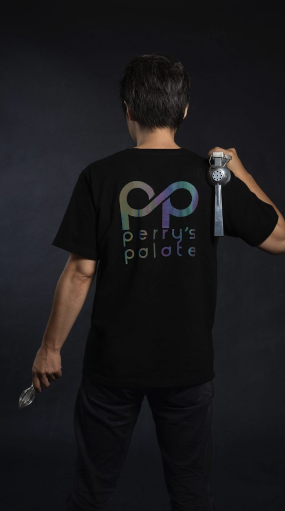

老朋友，好久不見：
除了回顧這十年，11/15 這一晚，我們決定把時間倒轉，回到故事最初的地方。
十年前，小城外剛成立時，Eason 和 Perry 就在大稻埕隔街相望。那時的大稻埕，夜晚還沒這麼熱鬧。街上沒什麼人，倒是有幾隻貓，比客人還常出現。
兩人時常互相串門子，在冷清的夜裡互相取暖，也一起見證了那段還沒熱鬧起來的大稻埕歲月。
十年過去了。Eason 和 Perry 都已離開大稻埕，但江湖上依然流傳著他們當年的傳奇事蹟。什麼「徒手破 POS 機」、「凌空咖啡杯破窗術」，招招都是失傳已久的武林絕學，至今仍讓老江湖津津樂道。
不過，這次請他們回來，不是要重現當年的武林傳奇。而是想讓兩位老朋友，再次站在同一個吧台，好好做幾杯經典調酒。
當晚還有 Perry 的老搭檔 Marco，為大家放送那些年耳熟能詳的華語金曲。
熟悉的音樂、經典的調酒、十年前的老朋友。這一晚，就讓我們坐上時光機，回到十年前的大稻埕。回到那個街上只有幾隻貓，卻有著說不完故事的夜晚。

- 活動
- 小城外十週年特別活動｜重返大稻埕
- 特別來賓
- Eason × Perry
- 音樂選曲
- Marco・華語經典金曲
- 日期
- 11/15（日）20:00–23:00
- 地點
- 小城外台北市大同區民生西路362巷15號2樓・開地圖
留個位子給你
線上訂位線上訂位在活動前一週開放；還沒開放的話，打電話給我們也可以。
小城外
02-2559-5560十年過去，有些人離開了大稻埕，有些故事卻一直留在這裡。
11/15，老朋友，我們吧台見。
小城外 敬邀